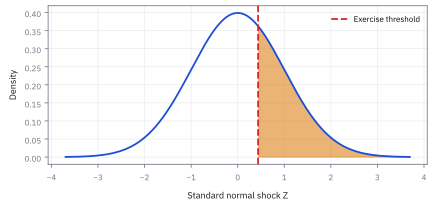
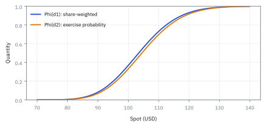

13.2 Itô's Lemma
เมื่อตัวแปรสุ่ม $X$ ขยับด้วยส่วนที่คาดได้ $a$ (drift) และส่วนสุ่มขนาด $b$ ฟังก์ชัน $f(t,X)$ จะได้ drift เพิ่มอีก $\tfrac12b^2f_{xx}$ ที่ chain rule ปกติมองไม่เห็น พจน์นี้คือเหตุที่ median ของราคา SPY ปีหน้าต่ำกว่าค่าเฉลี่ย
ทีมบริหารความเสี่ยงต้องเขียนรายงานสั้น ๆ ว่า ถ้าถือ SPY ไว้หนึ่งปี ราคาปลายปีน่าจะอยู่แถวไหน และมีโอกาสเท่าไรที่จะขาดทุน SPY คือกองทุนที่ซื้อขายเหมือนหุ้น และวิ่งตามดัชนี S&P 500 ของหุ้นใหญ่ 500 ตัวในสหรัฐ
โต๊ะเทรด (ทีมที่ซื้อขายในตลาด) ใช้แบบจำลองราคาชื่อ Geometric Brownian motion (GBM) แบบจำลองนี้บอกว่า ในช่วงเวลาสั้น ๆ $dt$ ราคา $S_t$ ขยับเป็นสองส่วน ส่วนแรกคาดได้ ส่วนที่สองสุ่ม
สูตรแบบนี้เรียกว่า SDE (stochastic differential equation) คือสูตรของการขยับในก้าวสั้น ๆ ที่มีส่วนสุ่มอยู่ด้วย ตัว $dW_t$ คือการขยับสุ่มของ Brownian motion ในช่วง $dt$ มีค่าเฉลี่ยศูนย์และ variance เท่ากับ $dt$
ของที่รู้:
- ราคาวันนี้ $S_0=\$520$
- drift $\mu=8\%$ ต่อปี (ตัวเลขสมมติของโต๊ะ) คือผลตอบแทนเฉลี่ยต่อปี ในก้าวสั้น ๆ ราคาขยับเฉลี่ยเป็นสัดส่วน $\mu\,dt$ ของราคาตัวเอง
- ความผันผวน $\sigma=18\%$ ต่อปี (ตัวเลขสมมติของโต๊ะ) คือขนาดการแกว่งของผลตอบแทน วัดเป็น SD ต่อปี
นักวิเคราะห์คนหนึ่งอยากรู้ว่า log ของราคาขยับอย่างไร เพราะ log เปลี่ยนการคูณเป็นการบวก เขาหารสองข้างของ SDE ด้วย $S_t$ แล้วใช้ chain rule ที่เรียนมา $d\ln S=\tfrac1S\,dS$
เขาจึงสรุปว่า log ราคาโตเฉลี่ย 8% ต่อปี แล้วบวกทุกก้าวตลอดหนึ่งปี ผลรวมของ $dt$ คือ 1 ปี และผลรวมของ $dW$ คือ $W_1$ ซึ่งเป็นเลขสุ่ม Normal มาตรฐาน (ค่าเฉลี่ย 0 SD 1) เรียกมันว่า $Z$ เขาได้ $\ln(S_1/520)=0.08+0.18Z$ จากตรงนี้เขาได้ตัวเลขสองตัว
- median ของราคาปลายปี (ราคาที่ครึ่งหนึ่งของผลลัพธ์อยู่ต่ำกว่า) ได้จากการใส่ $Z=0$ คือ $520e^{0.08}=\$563.31$
- โอกาสจบปีต่ำกว่า \$520 คือโอกาสที่ log return $\ln(S_1/520)$ ติดลบ ซึ่งเกิดเมื่อ $Z\lt-0.08/0.18=-0.4444$ ได้ $\Phi(-0.4444)=32.8\%$ โดย $\Phi$ คือโอกาสที่เลขสุ่ม Normal มาตรฐานต่ำกว่าค่าที่ใส่
รายงานความเสี่ยงควรใช้สองตัวเลขนี้ไหม?
ลองตอบก่อนเปิดเฉลย
ไม่ควร chain rule ปกติทิ้งพจน์หนึ่งไป พจน์นั้นมาจากความโค้งของ log หน้านี้จะพิสูจน์ในขั้นที่ 5 ว่า drift ที่ถูกของ log คือ
ใส่ 0.0638 แทน 0.08 ในสองสูตรเดิม
median จริงต่ำกว่าที่นักวิเคราะห์คิด $563.31-554.26=\$9.05$ และโอกาสขาดทุนคือ 36.2% ไม่ใช่ 32.8% ส่วน \$563.31 ไม่ได้ผิดทั้งหมด มันคือค่าเฉลี่ยของราคาปลายปีพอดี (ขั้นที่ 7 จะแสดงให้ดู) แค่ตอบคนละคำถามกับ median
ภาพรวมก่อนลงสูตร
หน้าที่แล้ว ทำไม calculus ปกติใช้กับ Brownian motion ไม่ได้ พบเรื่องสำคัญหนึ่งเรื่อง ถ้าบวกกำลังสองของการขยับเล็ก ๆ ของ Brownian motion $W$ ทุกก้าว ผลรวมไม่หดเป็นศูนย์ แต่เท่ากับเวลาที่ผ่านไป เขียนสั้น ๆ ว่า $(dW)^2=dt$ ผลคือ chain rule ของ $f(W)$ ต้องมีพจน์เพิ่ม $\tfrac12f''\,dt$
แต่ราคาจริงไม่ได้ขยับเหมือน $W$ เปล่า ๆ ราคามี drift และขนาดของส่วนสุ่มก็ขึ้นกับราคาวันนั้นด้วย หน้านี้จึงทำ Taylor แบบเดียวกันกับ $f(t,X_t)$ เมื่อ $X$ ขยับตาม SDE แบบใดก็ได้ กฎที่ได้เรียกว่า Itô's lemma
ใจความของกฎมีประโยคเดียว drift ของ $f$ เท่ากับ drift ที่ chain rule ปกติให้ บวกพจน์ใหม่ $\tfrac12b^2f_{xx}$ ตัว $f_{xx}$ คือความโค้งของ $f$ และ $b^2$ คือ variance ต่อปีของการขยับ รูปด้านล่างแยก drift ของ $\ln S$ ของ SPY ออกเป็นสองก้อนนี้ ก้อนแรกคือ $\mu=8\%$ ที่ chain rule เห็น ก้อนที่สองคือ $-\tfrac12\sigma^2=-\tfrac12(0.18)^2=-1.62\%$ ที่ความโค้งของ log กินไป เหลือ $8\%-1.62\%=6.38\%$ ต่อปี
จากนั้นหน้านี้ใช้กฎกับ Geometric Brownian motion เพื่อพิสูจน์ว่า SDE ของโต๊ะกับสูตร exponential ของราคาคือ process เดียวกัน แล้วตอบโจทย์ SPY ตรวจคำตอบด้วยการจำลองราคาทีละวันโดยไม่ใช้ Itô เลย และดูว่าความผันผวนกัดการโตของ median อย่างไร
รูป — drift ของ log ราคา SPY แยกเป็นสองก้อน
ศัพท์ที่ใช้ในหัวข้อนี้
- Brownian motion $W_t$
- การเดินสุ่มแบบต่อเนื่องที่เริ่มที่ศูนย์ ในทุกช่วงเวลายาว $\Delta t$ มันขยับแบบ Normal ค่าเฉลี่ยศูนย์ variance $\Delta t$ และการขยับในช่วงที่ไม่ทับกันไม่ขึ้นต่อกัน ใช้เป็นแหล่งของความสุ่มในแบบจำลองราคา
- Stochastic differential equation (SDE)
- สูตรที่บอกว่าในก้าวเวลาสั้น ๆ ตัวแปรขยับเท่าไร แยกเป็นสองส่วน ส่วนที่คาดได้คูณความยาวก้าว บวกส่วนสุ่มคูณการขยับของ Brownian motion โต๊ะใช้เขียนแบบจำลองของราคาและอัตราดอกเบี้ย เพราะคนเทรดคิดเป็นการขยับวันต่อวันก่อนคิดเป็นสูตรปิด
- Drift และ diffusion coefficient
- ใน $dX=a\,dt+b\,dW$ ตัว $a$ (drift) คือส่วนที่คาดได้ต่อหน่วยเวลา ตัว $b$ (diffusion coefficient) คือตัวคูณของ $dW$ ซึ่งกำหนดขนาดของส่วนสุ่ม ทั้งสองอ่านค่าที่ต้นก้าว และเปลี่ยนตามเวลาและค่าปัจจุบันได้
- Itô's lemma
- chain rule สำหรับ $f(t,X_t)$ เมื่อ $X$ ขยับตาม SDE ต่างจาก chain rule ปกติตรงที่ drift มีพจน์ $\tfrac12b^2f_{xx}$ เพิ่ม ใช้หาการขยับของ log ราคา มูลค่า option และทุกตัวแปรที่แปลงมาจากราคา
- Itô correction
- ชื่อเรียกพจน์ที่เพิ่มมา $\tfrac12b^2f_{xx}$ สำหรับ log ราคาบน GBM มันเท่ากับ $-\tfrac12\sigma^2$
- Geometric Brownian motion (GBM)
- SDE $dS=\mu S\,dt+\sigma S\,dW$ ที่ทั้ง drift และส่วนสุ่มเป็นสัดส่วนกับราคา เป็นแบบจำลองมาตรฐานของราคาหุ้น และเป็นฐานของสูตร Black–Scholes ที่ใช้ตั้งราคา option (สัญญาที่ให้สิทธิซื้อหรือขายหุ้นในราคาที่ตกลงไว้)
- Log return
- $\ln(S_1/S_0)$ คือ log ของอัตราส่วนราคาปลายช่วงต่อราคาต้นช่วง เมื่อราคาขยับน้อยมันใกล้กับผลตอบแทนเป็นเปอร์เซ็นต์ และ log return ของหลายช่วงบวกต่อกันได้
- Median
- ค่าที่ครึ่งหนึ่งของผลลัพธ์อยู่ต่ำกว่า ใช้บอกว่านักลงทุน “คนกลาง ๆ” เจออะไร ต่างจากค่าเฉลี่ยที่ถูกเส้นทางไม่กี่เส้นที่ขึ้นไปไกลดึงขึ้นไป
- Volatility drag
- การที่อัตราโตของ median ต่ำกว่า drift ของราคาอยู่ $\tfrac12\sigma^2$ ใช้อธิบายว่าทำไมสินทรัพย์ที่ผันผวนแรงโตช้ากว่าที่ค่าเฉลี่ยบอก มันไม่ใช่ค่าธรรมเนียม แต่เป็นผลของความโค้งของ log
- SE (standard error)
- SD ของค่าที่ประมาณจากการสุ่ม ใช้วัดว่าค่าที่จำลองได้ห่างจากทฤษฎีกี่ “หน่วยความบังเอิญ” ถ้าห่างเกิน 2 ถึง 3 SE แปลว่าไม่น่าเกิดจากความบังเอิญ
สัญลักษณ์และหน่วย
| สัญลักษณ์ | ความหมาย | หน่วย |
|---|---|---|
| $X_t$ | ตัวแปรที่ขยับตาม SDE | หน่วยของตัวแปร |
| $a(t,x),\ b(t,x)$ | drift ต่อปี และตัวคูณของ $dW$ | หน่วยต่อปี, หน่วยต่อ $\sqrt{\text{yr}}$ |
| $f(t,x)$ | ฟังก์ชันของเวลาและตัวแปร เช่น $\ln x$ | ตามสิ่งที่วัด |
| $f_t,\ f_x,\ f_{xx}$ | อนุพันธ์ตามเวลา ความชันตาม $x$ และความโค้งตาม $x$ | ตาม $f$ และ $x$ |
| $W_t,\ Z$ | Brownian motion มาตรฐาน และเลขสุ่ม $\mathcal N(0,1)$ | $\sqrt{\text{yr}}$, ไม่มีหน่วย |
| $S_t,\ S_0$ | ราคาหุ้นที่เวลา $t$ และวันนี้ | ดอลลาร์ต่อหุ้น |
| $\mu,\ \sigma$ | drift ของราคา และความผันผวน | ต่อปี, ต่อ $\sqrt{\text{yr}}$ |
| $\Phi$ | CDF ของ Normal มาตรฐาน | โอกาส |
ขั้นที่ 1 — SDE คือสูตรของก้าวเล็ก ๆ
ก่อนจะหาอนุพันธ์ของอะไร ต้องตกลงกันก่อนว่าสูตร $dX_t=a\,dt+b\,dW_t$ แปลว่าอะไร มันคือนิยามของการขยับทีละก้าว ซอยเวลาเป็นท่อน ท่อนละ $\Delta t$ อ่านค่า $a$ และ $b$ ที่ต้นท่อน แล้วขยับตามสูตรข้างล่าง ตัว $\Delta W_i$ คือการขยับสุ่มของ Brownian motion ในท่อนที่ $i$ มีค่าเฉลี่ยศูนย์และ SD เท่ากับ $\sqrt{\Delta t}$
ลองอ่าน GBM ของ SPY ที่ท่อนละหนึ่งวันทำการ ตลาดหุ้นสหรัฐเปิดราว 252 วันต่อปี หนึ่งวันจึงคิดเป็น $\Delta t=1/252$ ปี
สูตร $dX_t=a\,dt+b\,dW_t$ คือตัวย่อของการขยับทีละท่อนข้างบน เมื่อซอยท่อนให้สั้นลงเรื่อย ๆ หน้า Itô integral จะให้ความหมายที่แม่นกว่านี้ในรูป integral จุดที่ต้องจำคือ $a$ และ $b$ ใช้ค่าที่ต้นท่อน ซึ่งรู้แล้วก่อนก้าวสุ่มจะเกิด เงื่อนไขนี้คือเงื่อนไขเดียวกับที่หน้าที่แล้วใช้ เพื่อแทน $(dW)^2$ ด้วย $dt$ ได้แม้มีตัวคูณอยู่ข้างหน้า
ตัวเลขของ SPY บอกขนาดของสองส่วน ในหนึ่งวัน drift ดันราคาขึ้นเฉลี่ย $a\,\Delta t=\$0.1651$ หรือราว 16.5 เซนต์ ส่วนสุ่มมี SD $b\sqrt{\Delta t}=\$5.90$ (คูณ $\sqrt{\Delta t}$ เพราะ $\Delta W$ มี SD $\sqrt{\Delta t}$) ใหญ่กว่า drift $5.896/0.1651\approx36$ เท่า ดังนั้นการขยับรายวันเกือบทั้งหมดคือความสุ่ม ส่วน drift ค่อย ๆ สะสมตามเวลา
ขั้นที่ 2 — Taylor ของ f(t, X): ถามทีละพจน์ว่ารอดไหม
ทีนี้ให้ $f(t,x)$ เป็นฟังก์ชันใดก็ได้ที่มีอนุพันธ์ต่อเนื่องถึงอันดับสอง เช่น $\ln x$ เราอยากรู้ว่าในหนึ่งท่อน $f$ ขยับเท่าไร เมื่อเวลาขยับ $\Delta t$ และตัวแปรขยับ $\Delta X$ เครื่องมือคือ Taylor สองตัวแปร ถึงอันดับสองมีห้าพจน์ ตัวห้อยคืออนุพันธ์ย่อย เช่น $f_x=\partial f/\partial x$ และ $f_{xx}=\partial^2f/\partial x^2$
จากนั้นถามทีละพจน์ว่า พจน์ไหนยังรอดเมื่อบวกทุกท่อนแล้วซอยท่อนให้สั้นลง ใช้ตารางคูณของ Itô จากหน้าที่แล้ว เมื่อบวกทั้งช่วง $(dt)^2$ และ $dt\,dW$ หดเป็นศูนย์ ส่วน $(dW)^2$ รวมได้เท่ากับ $dt$
กาง $(\Delta X)^2$ ออกได้สามก้อน ก้อนกำลังสองของ drift มี $(\Delta t)^2$ และก้อนไขว้มี $\Delta t\,\Delta W$ ทั้งสองก้อนหายเมื่อบวกทั้งช่วง เหลือก้อนเดียวคือ $b^2(\Delta W)^2$ ซึ่งบวกแล้วได้เหมือน $b^2\Delta t$ พจน์ $f_{tx}$ และ $f_{tt}$ ก็หายด้วยเหตุผลเดียวกัน เพราะมี $\Delta t$ คูณกับ $\Delta t$ หรือ $\Delta X$ อยู่ พจน์อันดับสองจึงเหลือพจน์ใหม่พจน์เดียว คือ $\tfrac12f_{xx}b^2\,dt$
ทำไมก้อน drift ทิ้งได้ แต่ก้อนสุ่มทิ้งไม่ได้ ดูขนาดจาก SPY ในหนึ่งวัน กำลังสองของส่วนสุ่มเฉลี่ย $b^2\Delta t=34.77$ แต่กำลังสองของ drift มีแค่ $(a\Delta t)^2=0.0273$ หารกันดู ตัว $S^2$ ตัดกันหมด
ส่วนสุ่มใหญ่กว่าราว 1,276 เท่า และเพราะ $\Delta t$ อยู่ที่ตัวส่วน ยิ่งซอยก้าวสั้นลง อัตราส่วนนี้ยิ่งโต
รูป — กำลังสองของการขยับหนึ่งวันของ SPY แยกตามที่มา
ขั้นที่ 3 — ประกอบเป็น Itô's lemma
ตอนนี้รู้แล้วว่าพจน์ไหนรอด ขั้นนี้ประกอบมันเข้าด้วยกัน เก็บสามพจน์ที่รอด แทน $dX$ ด้วยนิยามของ SDE แทน $(dX)^2$ ด้วย $b^2\,dt$ จากขั้นที่แล้ว แล้วจัดกลุ่มเป็นส่วนที่คาดได้ (คูณ $dt$) กับส่วนสุ่ม (คูณ $dW$)
สูตรที่ได้คือ Itô's lemma ส่วนที่คูณ $dt$ คือ drift ของ $f$ chain rule ปกติให้แค่ $f_t+af_x$ Itô เติม $\tfrac12b^2f_{xx}$ คือครึ่งหนึ่งของความโค้งของ $f$ คูณ variance ต่อปีของการขยับ ส่วนสุ่ม $bf_x\,dW$ เหมือนที่ chain rule ปกติให้ทุกอย่าง แปลว่าความโค้งไม่เปลี่ยนความแรงของการสั่น แต่ดันค่าเฉลี่ยของ $f$ ไปทางหนึ่ง ถ้า $f$ โค้งหงายก็ดันขึ้น ถ้าโค้งคว่ำก็ดันลง
จุดที่คนมักสะดุดคือ ทำไมแทน $(\Delta X)^2$ ด้วย $b^2\Delta t$ ได้ ทั้งที่มีตัวคูณ $\tfrac12f_{xx}$ อยู่ข้างหน้า คำตอบคือตัวคูณนั้นอ่านค่าที่ต้นท่อน จึงรู้ค่าก่อนก้าวสุ่ม แบบเดียวกับหน้าที่แล้ว แถวสุดท้ายได้จากการเอาค่าเฉลี่ยของสองข้าง ส่วนสุ่ม $bf_x\,dW$ มีค่าเฉลี่ยศูนย์ เพราะ $bf_x$ รู้ค่าก่อนก้าว และ $dW$ ข้างหน้าเฉลี่ยศูนย์ไม่ว่าอดีตจะเป็นอย่างไร จึงเหลือแค่ค่าเฉลี่ยของ drift
ขั้นที่ 4 — ตรวจกับสามเรื่องที่รู้คำตอบแล้ว
โจทย์ให้อะไรมาบ้าง: กฎใหม่ควรให้คำตอบเดิม ในเรื่องที่เรารู้คำตอบจากทางอื่นแล้ว ถ้าไม่ตรง แปลว่ากฎผิด ลองสามเรื่อง
- (a) ผลตอบแทนสะสมของ SPY $R_t=\mu t+\sigma W_t$ จากหน้า ทำไม calculus ปกติใช้กับ Brownian motion ไม่ได้ มันขยับตาม $dR=\mu\,dt+\sigma\,dW$ จึงมี $a=\mu=0.08$ และ $b=\sigma=0.18$ ใช้กับ $f=x^2$ ซึ่งมี $f_x=2x$ และ $f_{xx}=2$ หน้านั้นหาไว้แล้วว่า $\mathbb E[R_1^2]=\mu^2+\sigma^2$
- (b) $f=x^2-t$ บน $W$ เอง ($a=0$, $b=1$) มี $f_t=-1$, $f_x=2x$, $f_{xx}=2$ เรารู้อยู่แล้วว่า $\mathbb E[W_t^2]=t$ เพราะ variance ของ $W_t$ คือ $t$
- (c) $f=e^{\sigma x-\sigma^2t/2}$ บน $W$ ($a=0$, $b=1$) โดยใช้ $\sigma=0.18$
คำตอบ: ทั้งสามเรื่องตรงกับคำตอบเดิม
- (a) drift ของ $R^2$ คือ $af_x=\mu\cdot2R$ บวก $\tfrac12b^2f_{xx}=\tfrac12\sigma^2\cdot2=\sigma^2$ เอาค่าเฉลี่ยโดยใช้ $\mathbb E[R_t]=\mu t$ แล้วบวกตั้งแต่ 0 ถึง 1 ปี ได้ 0.0388 ตรงกับหน้าที่แล้ว ซึ่งได้ว่าสัญญาที่จ่าย \$1 ล้านคูณ $R_1^2$ จ่ายเฉลี่ย $10^6\times0.0388=\$38{,}800$
- (b) drift ของ $W_t^2-t$ เป็นศูนย์ ค่าเฉลี่ยจึงคงที่ที่ค่าเริ่ม $0^2-0=0$ แปลว่า $\mathbb E[W_t^2]-t=0$ หรือ $\mathbb E[W_t^2]=t$ ตรงกับ variance ของ Brownian motion มาตรฐาน
- (c) drift เป็นศูนย์ ค่าเฉลี่ยจึงคงที่ที่ค่าเริ่ม $f(0,0)=e^0=1$ แปลว่า $\mathbb E[e^{0.18W_1}]\,e^{-0.0162}=1$ ย้าย $e^{-0.0162}$ ไปอีกข้างได้แถวสุดท้าย
สังเกตว่าใน (b) และ (c) พจน์ $f_t$ ที่ติดลบหักกับพจน์ใหม่ของ Itô ที่เป็นบวกพอดี
ตรวจเองใน 10 วินาที: ใน (c) $f_t=-\tfrac12\sigma^2f$ เพราะอนุพันธ์ของเลขชี้กำลังตาม $t$ คือ $-\sigma^2/2$ และ $f_{xx}=\sigma^2f$ เพราะหาอนุพันธ์ตาม $x$ สองครั้ง ดึง $\sigma$ ออกมาสองตัว แถวสุดท้ายยังได้จากอีกทาง ถ้า $Y$ เป็น Normal ค่าเฉลี่ยศูนย์ variance $v$ แล้ว $\mathbb E[e^{Y}]=e^{v/2}$ (moment generating function ของ Normal) ที่นี่ $Y=0.18W_1$ มี $v=0.18^2=0.0324$ จึงได้ $e^{0.0324/2}=e^{0.0162}$
ขั้นที่ 5 — GBM: หา drift ของ log ราคา
กฎผ่านการตรวจแล้ว กลับมาที่โจทย์ SPY ใน GBM มี $S$ คูณอยู่ทั้งในส่วนที่คาดได้และส่วนสุ่ม จึงบวกทีละก้าวตรง ๆ ไม่ได้ แต่ log เปลี่ยนการคูณเป็นการบวก จึงลอง $f(t,x)=\ln x$ ซึ่งไม่มี $t$ อยู่ในตัว แล้วแทนทีละพจน์ของ Itô's lemma โดยใช้ $a=\mu S$ และ $b=\sigma S$ ของ GBM
ทุกพจน์ $S$ ตัดกันหมด เหลือแค่ค่าคงที่ log ราคาจึงเป็น Brownian motion ธรรมดาที่มี drift $0.0638$ ต่อปีและความผันผวน $0.18$ ไม่ว่าราคาวันนี้จะเป็น \$520 หรือ \$100 นักวิเคราะห์ในโจทย์ทำถูกถึงพจน์ $af_x=\mu$ แล้วหยุด เขาลืมพจน์ $\tfrac12b^2f_{xx}=-\tfrac12\sigma^2$
ทำไมพจน์ที่หายไปติดลบ เพราะกราฟของ log โค้งคว่ำ ($f_{xx}=-1/S^2\lt0$) ราคาลงจึงทำให้ log ลดมากกว่าที่ราคาขึ้นเท่ากันทำให้ log เพิ่ม ลองด้วยตัวเลข สมมติ SPY ขึ้นหรือลง 18% ด้วยโอกาสเท่ากัน ราคาเฉลี่ยยังเป็น $\tfrac12(0.82+1.18)\times520=\$520$ แต่ log เฉลี่ยติดลบ
ค่านี้ใกล้ $-\tfrac12\sigma^2=-0.0162$ มาก รูปด้านล่างวาดเรื่องเดียวกันนี้
รูป — log โค้งคว่ำ: ขึ้นลงเท่ากันแล้ว log เฉลี่ยต่ำกว่าเดิม
ขั้นที่ 6 — SDE ของโต๊ะกับสูตร exponential คือ process เดียวกัน
ขั้นที่แล้วได้ $d\ln S$ ที่ฝั่งขวาไม่มี $S$ เหลือ จึงบวกทุกท่อนตั้งแต่เวลา 0 ถึง $T$ ได้ตรง ๆ ผลรวมของ $dt$ คือ $T$ และผลรวมของ $dW$ คือ $W_T-W_0=W_T$ เพราะ Brownian motion เริ่มที่ศูนย์ ผลคือสูตร exponential ของราคา
จากนั้นตรวจย้อนทาง มองราคาเป็นฟังก์ชัน $g(t,w)$ ของเวลากับค่าของ $W$ แล้วใช้ Itô กับ $X=W$ ($a=0$, $b=1$) ถ้าทุกอย่างถูก ต้องได้ SDE ของโต๊ะกลับมา
สูตร $S_T$ ที่ได้ตรงกับนิยามของ GBM ในหน้า Geometric Brownian motion ทุกตัว ส่วนที่เหลือพิสูจน์ทางกลับ exponential โค้งหงาย Itô จึงเติม $+\tfrac12\sigma^2$ ซึ่งหักกับ $-\tfrac12\sigma^2$ ที่ใส่ไว้ในเลขชี้กำลังพอดี เหลือ drift $\mu$ ตรงกับ SDE ของโต๊ะ หน้านั้นใส่ $\mu-\tfrac12\sigma^2$ ไว้ในเลขชี้กำลัง เพื่อให้ราคาขยับเฉลี่ย $\mu\,dt$ ของตัวเองในแต่ละก้าว ตอนนี้เห็นแล้วว่าเหตุผลนั้นคือ Itô correction ตัวเดียวกัน
ได้ของแถมสามข้อ ข้อแรก ราคาเป็น exponential จึงไม่ติดลบ ตรงกับความจริงที่เจ้าของหุ้นเสียได้ไม่เกินเงินที่ลงไป ข้อสอง อัตราส่วนราคา $S_{t+s}/S_t=e^{(\mu-\frac12\sigma^2)s+\sigma(W_{t+s}-W_t)}$ ขึ้นกับความยาวช่วง $s$ อย่างเดียว ไม่ขึ้นกับราคาวันนี้ ข้อสาม จำลองราคาปลายช่วงได้ตรงเป๊ะในก้าวเดียว ไม่ต้องเดินทีละวัน (การจำลอง SDE)
ขั้นที่ 7 — คำตอบของโจทย์ SPY: median, ค่าเฉลี่ย และโอกาสขาดทุน
โจทย์ให้อะไรมาบ้าง: ตอนนี้ตอบรายงานของทีมบริหารความเสี่ยงได้แล้ว ของที่รู้:
- ราคาวันนี้ $S_0=\$520$ drift $\mu=0.08$ และความผันผวน $\sigma=0.18$ ต่อปี
- ระยะเวลา $T=1$ ปี
- จากขั้นที่ 6 ราคาปลายปีคือ $S_1=520\,e^{0.0638+0.18Z}$ โดย $Z=W_1$ เป็นเลขสุ่ม Normal มาตรฐาน $\mathcal N(0,1)$
ต้องหาสามค่า วิธีหาแต่ละค่าเป็นแบบนี้
- median: median ของ $Z$ คือ 0 และ $e^{(\cdot)}$ เป็นฟังก์ชันเพิ่ม จึงไม่สลับลำดับของผลลัพธ์ ครึ่งหนึ่งที่ $Z\lt0$ ให้ราคาต่ำกว่าราคาที่ $Z=0$ median ของราคาจึงได้จากการใส่ $Z=0$
- ค่าเฉลี่ย: ใช้ Itô's lemma กับ $f=x$ ($f_x=1$, $f_{xx}=0$) ได้ SDE เดิม เอาค่าเฉลี่ยสองข้างได้ $d\,\mathbb E[S]=\mu\,\mathbb E[S]\,dt$ ซึ่งมีคำตอบ $\mathbb E[S_T]=S_0e^{\mu T}$
- โอกาสขาดทุน: ราคาต่ำกว่า \$520 เมื่อ log return $\ln(S_1/520)$ ติดลบ
แถวสุดท้ายคือตัวเลขของนักวิเคราะห์ในโจทย์ ที่ใช้ 0.08 แทน 0.0638
คำตอบ: ครึ่งหนึ่งของผลลัพธ์จบปีต่ำกว่า \$554.26 ค่าเฉลี่ยคือ \$563.31 ห่างกัน $563.31-554.26=\$9.05$ และโอกาสจบปีต่ำกว่า \$520 คือ 36.2% chain rule ปกติให้ median เท่ากับค่าเฉลี่ย และให้โอกาสขาดทุน 32.8% ต่ำไป $0.3615-0.3284=0.033$ หรือ 3.3 จุด เพราะใช้จุดกึ่งกลางของ log ที่ 0.08 แทน 0.0638
ตรวจเองใน 10 วินาที: ค่าเฉลี่ยหาได้อีกทางจาก moment generating function ของ Normal ที่ขั้นที่ 4 ใช้ไปแล้ว $\mathbb E[e^{0.18Z}]=e^{0.0162}$
ส่วน median ตรวจด้วยมือได้จาก Taylor สองพจน์ $e^{0.0638}\approx1+0.0638+0.0638^2/2=1.0658$ คูณ 520 ได้ราว \$554.2
รูป — การกระจายของ log return หนึ่งปีของ SPY กับพื้นที่ที่ขาดทุน
ขั้นที่ 8 — หุ้นที่ผันผวนกว่า: ช่องว่างโตตาม σ²
โจทย์ให้อะไรมาบ้าง: SPY ถือหุ้น 500 ตัว ความผันผวนจึงไม่สูงนัก หุ้นตัวเดียวมักผันผวนกว่านั้นมาก ถ้าความผันผวนสูงขึ้น ความผิดของ chain rule ใหญ่ขึ้นแค่ไหน ลองหุ้นสมมติตัวหนึ่ง
- ราคาวันนี้ $S_0=\$100$
- drift $\mu=12\%$ ต่อปี
- ความผันผวน $\sigma=28\%$ ต่อปี
ใช้สูตรชุดเดิมจากขั้นที่ 7 เปลี่ยนแค่ตัวเลข
คำตอบ: median คือ \$108.42 ค่าเฉลี่ยคือ \$112.75 ห่างกัน $112.75-108.42=\$4.33$ หรือ 4.3% ของราคาวันนี้ ส่วน SPY ห่างแค่ $9.05/520=1.7\%$ โอกาสขาดทุนในหนึ่งปีคือ 38.6% แต่ chain rule ปกติให้ 33.4% ต่ำไป $0.3865-0.3341=0.052$ หรือ 5.2 จุด เทียบกับ 3.3 จุดของ SPY ยิ่งผันผวน ความผิดของ chain rule ยิ่งใหญ่ เพราะพจน์ที่มันทิ้งคือ $\tfrac12\sigma^2$ ซึ่งโตตามกำลังสองของความผันผวน
ตรวจเองใน 10 วินาที: $0.28^2=0.0784$ ครึ่งหนึ่งคือ 0.0392 จึงได้ $0.12-0.0392=0.0808$ และ $e^{0.0808}\approx1+0.0808+0.0808^2/2=1.0841$
รูป — ค่าเฉลี่ยกับ median ของราคาปลายปีแยกจากกัน

ขั้นที่ 9 — volatility drag: ความผันผวนกัดการโตของ median
ขั้นที่ 8 เห็นแล้วว่าหุ้นที่ผันผวนกว่ามีช่องว่างระหว่าง median กับค่าเฉลี่ยกว้างกว่า แต่หุ้นตัวนั้นมี drift ต่างจาก SPY ด้วย ขั้นนี้จึงแยกผลของความผันผวนออกมาดูตัวเดียว ตรึง drift ของราคาไว้ที่ $\mu=12\%$ แล้วเปลี่ยนแค่ $\sigma$
อัตราโตของ median คือ drift ของ log จากขั้นที่ 5 เขียนเป็นฟังก์ชันของ $\sigma$ ได้ $g(\sigma)=\mu-\tfrac12\sigma^2$ คำถามคือ $g$ ลดลงเท่าไร และลดถึงศูนย์ที่ $\sigma$ เท่าไร
ค่าเฉลี่ยของราคายังโต 12% ต่อปีในทุกกรณี เพราะ $\mathbb E[S_T]=S_0e^{\mu T}$ ไม่มี $\sigma$ อยู่เลย แต่ median โตช้าลงเรื่อย ๆ เมื่อ $\sigma$ โตขึ้น และที่ความผันผวนราว 49% median ไม่โตเลย ถ้า SPY ผันผวนถึง 40% ขณะที่ drift ยังเป็น 8% (แถวสุดท้าย) median ของมันก็หยุดโตเหมือนกัน
drag นี้ไม่ใช่เงินที่ใครหักไป มันเกิดจากความโค้งของ log ลองขึ้น 10% แล้วลง 10% ราคาเหลือ $1.1\times0.9=0.99$ ของเดิม ไม่ใช่ 1 ยิ่งขึ้นลงแรง การขึ้นลงสลับกันยิ่งกัดมาก เช่น ขึ้น 30% แล้วลง 30% เหลือ $1.3\times0.7=0.91$
รูป — drift เท่าเดิม ความผันผวนมากขึ้น median โตช้าลง

ขั้นที่ 10 — ตรวจด้วยการเดิน SDE ทีละวัน โดยไม่ใช้ผลของ Itô
โจทย์ให้อะไรมาบ้าง: ตัวเลขทุกตัวตั้งแต่ขั้นที่ 5 พิงพจน์ใหม่ของ Itô ถ้าการพิสูจน์ผิด ตัวเลขก็ผิดตามทั้งหมด จึงควรตรวจด้วยวิธีที่ไม่ใช้ Itô เลย คือจำลองราคาตามนิยามก้าวเล็ก ๆ ของ SDE ตรง ๆ แล้ววัดผล โค้ดท้ายหน้าทำแบบนี้
- เดินราคาตามนิยาม $S_i=S_{i-1}(1+\mu\Delta t+\sigma\Delta W_i)$ โดย $\Delta t=1/252$ และ $\Delta W_i=\sqrt{\Delta t}\,Z_i$ ($Z_i$ คือเลขสุ่ม Normal มาตรฐาน)
- วันละก้าว 252 ก้าวเท่ากับหนึ่งปี
- ทำซ้ำ $N=20{,}000$ เส้นทาง ด้วย seed 132 (seed คือเลขตั้งต้นของเครื่องสุ่ม ใช้เลขเดิมแล้วได้ผลเดิมทุกครั้ง)
ในโค้ดส่วนนี้ไม่มี $\tfrac12\sigma^2$ และไม่มี log เลย จากนั้นวัดสี่ค่าเทียบกับทฤษฎี แล้วบอกว่าห่างกันกี่ SE (standard error คือ SD ของค่าที่ได้จากการสุ่ม)
| ค่า | ทฤษฎี | ได้จากการเดิน SDE | ห่างกี่ SE |
|---|---|---|---|
| ค่าเฉลี่ยของ $\ln(S_1/S_0)$ | 0.0638 (Itô) | 0.063807 | 0.0 |
| ค่าเฉลี่ยของ $\ln(S_1/S_0)$ | 0.08 (chain rule) | 0.063807 | −12.7 |
| median ของ $S_1$ | \$554.26 | \$553.72 | −0.6 |
| ค่าเฉลี่ยของ $S_1$ | \$563.31 | \$563.43 | +0.2 |
| $P(S_1\lt520)$ | 36.15% | 36.41% | +0.7 |
คำตอบ: ค่าเฉลี่ยของ log return จากการเดิน SDE คือ 0.063807 ตรงกับ 0.0638 ของ Itô ห่างแค่ 0.005 SE แต่ห่างจาก 0.08 ของ chain rule ปกติถึง 12.7 SE ระยะขนาดนี้เกิดจากความบังเอิญไม่ได้ อีกสามแถวห่างทฤษฎีไม่ถึง 1 SE ข้อสรุปคือ Itô correction ไม่ใช่สิ่งที่สูตรแต่งขึ้น มันเกิดเองเมื่อเอาการขยับเล็ก ๆ มาคูณทบกัน
ตรวจเองใน 10 วินาที: SE ของค่าเฉลี่ย log คือ SD ของ log return หารด้วยรากของจำนวนเส้นทาง
SE ของค่าเฉลี่ยราคาคือ SD ของราคาปลายปี \$102.22 (หาจาก $S^2$ ในขั้นที่ 11) หารด้วย $\sqrt{20{,}000}=141.4$ ได้ $102.22/141.4=\$0.72$ ส่วน SE ของ median ใช้สูตร $1/(2p\sqrt N)$ โดย $p$ คือ density ของราคาปลายปีที่จุด median สำหรับ lognormal ค่านี้คือ $1/(m\,\sigma\sqrt{2\pi})$ เมื่อ $m$ คือ median เพราะเลขชี้กำลังของ density เป็นศูนย์ตรง median
อีกเรื่องที่ควรรู้ การเดินวันละก้าวไม่ใช่ GBM ตรงเป๊ะ ค่าเฉลี่ยของมันคือดอกเบี้ยทบต้นรายวัน ไม่ใช่ทบต้นต่อเนื่อง $e^{0.08}$
สองค่าต่างกันแค่ 0.7 เซนต์ เล็กกว่า SE \$0.72 ราวร้อยเท่า จึงไม่กวนผลการตรวจ
ขั้นที่ 11 — ใช้กับ S²: chain rule ปกติบอกว่าราคาปลายปีไม่กระจายเลย
median และค่าเฉลี่ยบอกว่าราคาปลายปีอยู่แถวไหน แต่ยังไม่บอกว่ากระจายกว้างแค่ไหน ความกว้างวัดด้วย SD และ $\operatorname{SD}(S_1)^2=\mathbb E[S_1^2]-(\mathbb E[S_1])^2$ จึงต้องหา $\mathbb E[S_1^2]$ ใช้ Itô กับ $f=x^2$ ซึ่งมี $f_x=2S$ และ $f_{xx}=2$ บน GBM แล้วเอาค่าเฉลี่ยสองข้าง แถวสุดท้ายคือสิ่งที่ chain rule ปกติจะได้
drift ของ $S^2$ มีสองก้อน ก้อน $af_x=\mu S\cdot2S=2\mu S^2$ กับก้อน $\tfrac12b^2f_{xx}=\tfrac12\sigma^2S^2\cdot2=\sigma^2S^2$ ทั้งคู่เป็นสัดส่วนกับ $S^2$ ค่าเฉลี่ยของ $S^2$ จึงโตแบบ exponential ด้วยอัตรา $2\mu+\sigma^2=0.16+0.0324=0.1924$ ต่อปี เหมือนที่ค่าเฉลี่ยของ $S$ โตด้วยอัตรา $\mu$ ผลคือราคาปลายปีมี SD \$102.22 หรือ $102.22/563.31\approx18\%$ ของค่าเฉลี่ย
chain rule ปกติจะได้แค่อัตรา $2\mu$ ซึ่งทำให้ $\mathbb E[S_1^2]=(\mathbb E[S_1])^2$ พอดี แปลว่า variance เป็นศูนย์ หรือราคาปลายปีแน่นอน ทั้งที่แบบจำลองมีความผันผวน 18% พจน์ที่ chain rule ทิ้งไปคือความกว้างทั้งหมดของการกระจาย
ความผิดที่ให้ตัวเลขผิดโดยไม่มีใครเตือน
เรียก $\mu-\tfrac12\sigma^2$ ว่าผลตอบแทนคาดหวัง (expected return): สมมติถือ SPY มูลค่า \$10 ล้าน ค่าเฉลี่ยของมูลค่าในอีกหนึ่งปีคือ $10^7e^{0.08}$ ถ้าตารางไหนเอา 6.38% มาใช้เป็นผลตอบแทนคาดหวัง จะได้ $10^7e^{0.0638}$ ซึ่งต่ำไป
เงินหายไปขนาดนี้ทั้งที่ใช้แบบจำลองเดียวกัน ทุกตัวเลขในตารางจึงต้องกำกับว่าเป็น drift ของราคา ($\mu$) หรือ drift ของ log ($\mu-\tfrac12\sigma^2$)
ใช้ $\mu$ เป็นจุดกึ่งกลางของ log ตอนคิดโอกาสขาดทุน: SPY ได้ $\Phi(-0.08/0.18)=32.8\%$ แทน $\Phi(-0.0638/0.18)=36.2\%$ และหุ้นผันผวน 28% ของขั้นที่ 8 ได้ $\Phi(-0.12/0.28)=33.4\%$ แทน $\Phi(-0.0808/0.28)=38.6\%$ รายงานความเสี่ยงจึงต่ำไป 3.3 และ 5.2 จุด โดยไม่มีตัวเลขไหนดูแปลกพอให้ใครสงสัย
คูณ drift ของ log ด้วย leverage: กองทุน 3 เท่ารายวัน (กองทุนที่ตั้งใจให้ผลตอบแทนแต่ละวันเป็น 3 เท่าของ SPY) มีมูลค่า $L$ ที่ขยับตาม $dL/L=3\,dS/S$ แปลว่า $dL=3\mu L\,dt+3\sigma L\,dW$ คือ GBM ที่มี drift $3\mu$ และความผันผวน $3\sigma$ สูตร drift ของ log จากขั้นที่ 5 ให้
ไม่ใช่ $3\times0.0638=0.1914$ ถ้าลงเงิน \$1 ล้าน median หลังหนึ่งปีคือ $10^6e^{0.0942}=\$1{,}098{,}779$ ไม่ใช่ $10^6e^{0.1914}=\$1{,}210{,}944$ (ยังไม่คิดค่าธรรมเนียมและดอกเบี้ย) ความผันผวนสามเท่าทำให้ drag โต $3^2=9$ เท่า
ใช้ทำอะไรบนโต๊ะจริง
ทุกครั้งที่โต๊ะแปลงราคาเป็น log return หรือแปลงกลับ Itô's lemma ทำงานอยู่ข้างใน ตัวอย่างแรกคือ VaR (ตัวเลขขาดทุนที่จะไม่เกินด้วยโอกาสที่กำหนด เช่น 99%) ถ้าคิดบน log return ต้องใช้จุดกึ่งกลาง $\mu-\tfrac12\sigma^2$ แต่ถ้าคาดมูลค่าพอร์ตเฉลี่ย ต้องใช้ $\mu$
ตัวอย่างที่สองคือการตั้งราคา option (สัญญาที่ให้สิทธิซื้อหรือขายหุ้นในราคาที่ตกลงไว้) ตอนนี้โต๊ะเขียน GBM โดยใช้อัตราดอกเบี้ย $r$ ลบ dividend yield $q$ (เงินปันผลต่อปีคิดเป็นสัดส่วนของราคา) แทน $\mu$ ได้ $dS=(r-q)S\,dt+\sigma S\,dW$ Itô's lemma ให้ drift ของ log เป็น $r-q-\tfrac12\sigma^2$ ตัวนี้คือตัวที่โผล่ใน $d_2$ ของ สูตร Black–Scholes และใน characteristic function ของ $\ln S_T$ ที่ใช้ตั้งราคาด้วย Fourier และ FFT
งานที่ใหญ่ที่สุดคือใช้ Itô's lemma กับมูลค่า option $V(t,S)$ ซึ่งเป็นฟังก์ชันของเวลาและราคา แทน $a=\mu S$ และ $b=\sigma S$ ได้
พจน์ $\tfrac12\sigma^2S^2V_{SS}$ มาจาก gamma ($V_{SS}$ คือความโค้งของมูลค่า option ตามราคาหุ้น) และเป็นแกนของ สมการ Black–Scholes ข้อควรระวังคือ payoff วันหมดอายุอย่าง $\max(S-K,0)$ ($K$ คือ strike ราคาที่ตกลงไว้) หักมุมที่ $S=K$ จึงไม่มี $f_{xx}$ ตรงนั้น เราจึงใช้ Itô กับมูลค่าก่อนหมดอายุซึ่งเรียบ ไม่ใช้กับ payoff ในวันสุดท้าย
อย่าลืมว่า GBM เป็นแค่จุดเริ่ม log return จริงมีหางหนากว่า Normal (การขยับแรงมากเกิดบ่อยกว่าที่ Normal บอก) และความผันผวนเปลี่ยนตลอดเวลา (stylized facts) Itô's lemma ยังใช้ได้กับแบบจำลองที่ความผันผวนสุ่มได้เอง เช่น Heston แค่ drift ของ log กลายเป็น $\mu-\tfrac12\sigma_t^2$ ที่เปลี่ยนตามเวลา
โจทย์ตรวจความเข้าใจ
1. โต๊ะ option ต้องดูสัญญา call บนหุ้นตัวหนึ่ง call คือสิทธิซื้อหุ้นในราคา strike $K$ ที่ตกลงไว้ ถ้าวันหมดอายุราคาหุ้นสูงกว่า $K$ ผู้ถือใช้สิทธิแล้วได้เงิน เรียกว่าจบ in the money
ของที่รู้:
- ราคาวันนี้ $S_0=\$100$
- อัตราดอกเบี้ย $r=5\%$ ต่อปี
- dividend yield $q=1\%$ ต่อปี (เงินปันผลต่อปีคิดเป็นสัดส่วนของราคา)
- ความผันผวน $\sigma=30\%$ ต่อปี
- strike $K=\$80$ หมดอายุในหนึ่งปี
โต๊ะเขียนแบบจำลองเป็น $dS=(r-q)S\,dt+\sigma S\,dW$ หา drift ของ log, median และค่าเฉลี่ยของราคาในหนึ่งปีภายใต้แบบจำลองนี้ และโอกาสที่ call จบ in the money
เฉลย
drift ของ log ได้จากขั้นที่ 5 โดยใส่ $r-q$ แทน $\mu$ call จบ in the money เมื่อ $S_1\gt80$ คือ $\ln(S_1/100)\gt\ln0.8$ เขียน $\ln(S_1/100)=-0.005+0.30Z$ แล้วแก้หา $Z$
drift ของ log ติดลบเล็กน้อย median จึงต่ำกว่าราคาวันนี้ ค่าเฉลี่ย \$104.08 คือราคา forward หนึ่งปี (ราคาที่ตกลงวันนี้เพื่อซื้อขายในอีกหนึ่งปี) ตัวเลข $0.7271$ คือ $d_2$ ของ สูตร Black–Scholes และ $d_1=d_2+\sigma=1.0271$ ใส่ทั้งสองในสูตรนั้นได้ราคา call $C$
ถ้าใช้ chain rule ปกติ drift ของ log จะเป็น $r-q=0.04$ แทน $-0.005$ ได้ $Z\gt(\ln0.8-0.04)/0.30=-0.8771$ และโอกาส $\Phi(0.8771)=81.0\%$ สูงไป $0.8098-0.7664=0.043$ หรือ 4.3 จุด
2. คุณวางแผนจะเอาเงิน \$1 ล้านไปซื้อ SPY ในอีกหนึ่งปีข้างหน้า จำนวนหุ้นที่จะได้คือ $10^6/S_1$ ซึ่งวันนี้ยังสุ่มอยู่ ใช้แบบจำลอง SPY เดิม ($S_0=\$520$, $\mu=8\%$, $\sigma=18\%$) ค่าเฉลี่ยของจำนวนหุ้นที่ได้คือเท่าไร? (ใช้ Itô กับ $f=1/x$)
เฉลย
หาอนุพันธ์ของ $1/x$ แล้วแทนใน drift ของ Itô's lemma
ได้ $d(1/S)=(\sigma^2-\mu)(1/S)\,dt-\sigma(1/S)\,dW$ แปลว่า $1/S$ เป็น GBM ที่มี drift $-0.0476$ ค่าเฉลี่ยของมันจึงโตด้วยอัตรานี้ แบบเดียวกับค่าเฉลี่ยของ $S$ ในขั้นที่ 7
ได้หุ้นเฉลี่ย 1,833.68 หุ้น มากกว่าคำตอบที่ได้จากการหารด้วยราคาเฉลี่ย $10^6/563.31=1{,}775.22$ หุ้น เพราะ $1/x$ โค้งหงาย ราคาที่ต่ำลงให้หุ้นเพิ่มมากกว่าที่ราคาสูงขึ้นเท่ากันทำให้หุ้นลดลง
3. ผู้ขายข้อมูลรายหนึ่งส่งแบบจำลองราคามาในรูปสูตรปิด $S_T=S_0e^{0.05T+0.20W_T}$ แต่ระบบของโต๊ะรับเป็น SDE $dS=\mu S\,dt+\sigma S\,dW$ ต้องใส่ $\mu$ เท่าไร และหุ้นราคา \$100 มีค่าเฉลี่ยกับ median หลังหนึ่งปีเท่าไร?
เฉลย
เทียบกับสูตร exponential ของ GBM ในขั้นที่ 6 ตัวคูณของ $W_T$ คือ $\sigma$ และตัวคูณของ $T$ คือ $\mu-\tfrac12\sigma^2$
ถ้าเผลอใส่ 5% เป็น drift ของราคา จะได้ค่าเฉลี่ย \$105.13 ต่ำไป $107.25-105.13=\$2.12$
คำนวณซ้ำด้วย JavaScript
รันใน Node.js ได้โดยไม่ต้องติดตั้งอะไร ฟังก์ชัน ito คือ Itô's lemma ในรูปโค้ด มันรับอนุพันธ์ของ $f$ กับ $a$ และ $b$ แล้วคืน drift และตัวคูณของส่วนสุ่ม โค้ดใช้มันหา drift ของ $\ln S$, $S^2$, $1/S$ และกองทุน 3 เท่า จากนั้นเดิน SDE ทีละวันด้วยเครื่องสุ่มที่มี seed แล้วเทียบกับทฤษฎีเป็นจำนวน SE ตัวเลขในตารางของขั้นที่ 10 มาจากผลของโค้ดนี้
เปิดดูโค้ด
// Standard Normal CDF: Simpson's rule on the bell curve from 0 to |x|.
function Phi(x) {
if (!Number.isFinite(x) || Math.abs(x) > 8) throw new RangeError('Phi needs a finite score between -8 and 8');
const n = 4000, h = Math.abs(x) / n, phi = z => Math.exp(-z * z / 2) / Math.sqrt(2 * Math.PI);
let s = 0;
for (let i = 0; i <= n; i++) s += (i === 0 || i === n ? 1 : i % 2 ? 4 : 2) * phi(i * h);
return 0.5 + Math.sign(x) * s * h / 3;
}
// Ito's lemma for dX = a dt + b dW: df = (f_t + a f_x + b^2 f_xx / 2) dt + b f_x dW.
function ito(d, a, b) {
const {ft = 0, fx, fxx} = d;
if (![ft, fx, fxx, a, b].every(Number.isFinite)) throw new TypeError('Derivatives and coefficients must be finite numbers');
return {drift: ft + a * fx + 0.5 * b * b * fxx, noise: b * fx};
}
// GBM dS = mu S dt + sigma S dW. ln S has f_x = 1/S and f_xx = -1/S^2; S cancels, so any S gives the same drift.
function gbmStats(S0, mu, sigma, T, K = S0) {
if (![S0, mu, sigma, T, K].every(Number.isFinite) || S0 <= 0 || sigma <= 0 || T <= 0 || K <= 0) throw new RangeError('Need S0, sigma, T, K > 0');
const logDrift = ito({fx: 1 / S0, fxx: -1 / (S0 * S0)}, mu * S0, sigma * S0).drift;
// E[S^2] from Ito on S^2: its drift is (2 mu + sigma^2) S^2.
const rate2 = ito({fx: 2 * S0, fxx: 2}, mu * S0, sigma * S0).drift / (S0 * S0);
const mean = S0 * Math.exp(mu * T), second = S0 * S0 * Math.exp(rate2 * T);
const z = (Math.log(K / S0) - logDrift * T) / (sigma * Math.sqrt(T));
const zNaive = (Math.log(K / S0) - mu * T) / (sigma * Math.sqrt(T));
return {logDrift, median: S0 * Math.exp(logDrift * T), mean, sd: Math.sqrt(second - mean * mean),
below: Phi(z), naiveBelow: Phi(zNaive)};
}
// mulberry32 + Box-Muller: seeded standard Normals, the same generator as the quadratic-variation page.
function normals(seed) {
let a = seed >>> 0, spare = null;
const u = () => {
a = (a + 0x6D2B79F5) >>> 0;
let t = Math.imul(a ^ (a >>> 15), a | 1);
t ^= t + Math.imul(t ^ (t >>> 7), t | 61);
return (((t ^ (t >>> 14)) >>> 0) + 0.5) / 4294967296;
};
return () => {
if (spare !== null) { const z = spare; spare = null; return z; }
const r = Math.sqrt(-2 * Math.log(u())), angle = 2 * Math.PI * u();
spare = r * Math.sin(angle);
return r * Math.cos(angle);
};
}
// Step the SDE itself, S_i = S_(i-1) (1 + mu dt + sigma dW_i). No Ito result is used inside.
function simulateGBM(paths, steps, S0, mu, sigma, T, seed) {
const z = normals(seed), dt = T / steps, sq = Math.sqrt(dt), ends = new Float64Array(paths);
let logSum = 0, sum = 0, below = 0;
for (let p = 0; p < paths; p++) {
let S = S0;
for (let k = 0; k < steps; k++) S *= 1 + mu * dt + sigma * sq * z();
ends[p] = S; logSum += Math.log(S / S0); sum += S;
if (S < S0) below++;
}
ends.sort();
const median = paths % 2 ? ends[(paths - 1) / 2] : (ends[paths / 2 - 1] + ends[paths / 2]) / 2;
return {meanLog: logSum / paths, median, mean: sum / paths, below: below / paths};
}
const S0 = 520, mu = 0.08, sigma = 0.18, N = 20000, dt = 1 / 252;
const spy = gbmStats(S0, mu, sigma, 1);
const sim = simulateGBM(N, 252, S0, mu, sigma, 1, 132);
// Standard errors: mean log sigma/sqrt(N); median 1/(2 density sqrt(N)); mean SD/sqrt(N); a share sqrt(p(1-p)/N).
const density = 1 / (spy.median * sigma * Math.sqrt(2 * Math.PI));
const se = {meanLog: sigma / Math.sqrt(N), median: 1 / (2 * density * Math.sqrt(N)), mean: spy.sd / Math.sqrt(N),
below: Math.sqrt(spy.below * (1 - spy.below) / N)};
const zSim = {meanLog: (sim.meanLog - spy.logDrift) / se.meanLog, meanLogChainRule: (sim.meanLog - mu) / se.meanLog,
median: (sim.median - spy.median) / se.median, mean: (sim.mean - spy.mean) / se.mean, below: (sim.below - spy.below) / se.below};
const lev = lam => ito({fx: 1, fxx: -1}, lam * mu, lam * sigma).drift; // ln L at the point L = 1
// Risk-neutral example: r = 5%, q = 1%, sigma = 30%, S0 = 100, K = 80, one year.
const rn = {logDrift: 0.05 - 0.01 - 0.5 * 0.09};
rn.d2 = (Math.log(100 / 80) + rn.logDrift) / 0.3;
rn.itm = Phi(rn.d2); rn.call = 100 * Math.exp(-0.01) * Phi(rn.d2 + 0.3) - 80 * Math.exp(-0.05) * Phi(rn.d2);
console.log(JSON.stringify({
day: {drift: S0 * mu * dt, noiseSD: S0 * sigma * Math.sqrt(dt), squareRatio: (sigma * sigma * dt) / (mu * mu * dt * dt)},
checks: {R2: ito({fx: 2 * 0.3, fxx: 2}, mu, sigma), W2minusT: ito({ft: -1, fx: 2 * 0.7, fxx: 2}, 0, 1),
expMartingale: ito({ft: -sigma * sigma / 2, fx: sigma, fxx: sigma * sigma}, 0, 1)},
chord: 0.5 * (Math.log(0.82) + Math.log(1.18)),
spy, gap: spy.mean - spy.median, sim, zSim, eulerMean: S0 * (1 + mu * dt) ** 252,
volatile: gbmStats(100, 0.12, 0.28, 1),
drag: [0.10, 0.18, 0.28, 0.50, 0.60].map(s => 0.12 - s * s / 2), zeroGrowthVol: [Math.sqrt(2 * 0.12), Math.sqrt(2 * mu)],
pitfall: {usd: 1e7 * (spy.mean - spy.median) / S0, lev3: lev(3), lev3Median: 1e6 * Math.exp(lev(3)),
lev3NaiveMedian: 1e6 * Math.exp(3 * spy.logDrift)},
exercises: {rn, inverseShares: 1e6 / S0 * Math.exp(sigma * sigma - mu), atMean: 1e6 / spy.mean,
vendor: {mu: 0.05 + 0.2 * 0.2 / 2, mean: 100 * Math.exp(0.07), median: 100 * Math.exp(0.05)}}
}));สิ่งที่ควรตอบได้หลังอ่าน
- $dX=a\,dt+b\,dW$ คือสูตรก้าวเล็ก ๆ ที่อ่านค่า $a$ และ $b$ ที่ต้นก้าว เมื่อยกกำลังสอง $(dX)^2$ เหลือแค่ $b^2\,dt$
- Itô's lemma: $df=(f_t+af_x+\tfrac12b^2f_{xx})\,dt+bf_x\,dW$ พจน์ใหม่ขึ้นกับความผันผวนและความโค้งของ $f$ ไม่ขึ้นกับ drift
- GBM: $d\ln S=(\mu-\tfrac12\sigma^2)\,dt+\sigma\,dW$ บวกทุกก้าวได้ $S_T=S_0e^{(\mu-\frac12\sigma^2)T+\sigma W_T}$ ซึ่งคือนิยามของ GBM
- SPY ราคา \$520 drift 8% ความผันผวน 18%: median ปีหน้า \$554.26 ค่าเฉลี่ย \$563.31 โอกาสจบปีต่ำกว่า \$520 คือ 36.2% ไม่ใช่ 32.8% ที่ chain rule ปกติให้
- ความผันผวนกัดอัตราโตของ median ไป $\tfrac12\sigma^2$ แต่ไม่แตะอัตราโตของค่าเฉลี่ย ที่ drift 12% median หยุดโตเมื่อความผันผวนราว 49%
- การเดิน SDE ทีละวันโดยไม่ใช้ Itô ให้ค่าเฉลี่ยของ log return 0.063807 ห่าง 0.0638 แค่ 0.005 SE แต่ห่าง 0.08 ถึง 12.7 SE
หน้าถัดไป Itô integral ถามว่า $\int b\,dW$ ที่ซ่อนอยู่ใน SDE ทุกตัวแปลว่าอะไรแน่ ทำไมต้องอ่านตัวคูณที่ต้นท่อน และถ้าอ่านที่ปลายท่อนจะได้กำไรปลอมเท่าไร